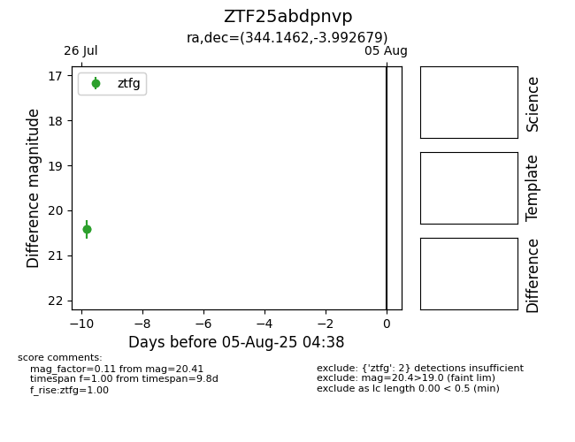

Target ZTF25abdpnvp at 2025-08-05 04:38, see:
FINK: fink-portal.org/ZTF25abdpnvp
Lasair: lasair-ztf.lsst.ac.uk/objects/ZTF25abdpnvp
ALeRCE: alerce.online/object/ZTF25abdpnvp
alt names
ZTF25abdpnvp (ztf,fink)
coordinates:
equatorial (ra, dec) = (344.1462,-3.99268)
galactic (l, b) = (68.0435,-54.13563)
photometry
last ztfg=20.41
2 ztfg detections
